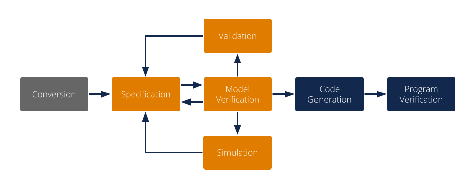
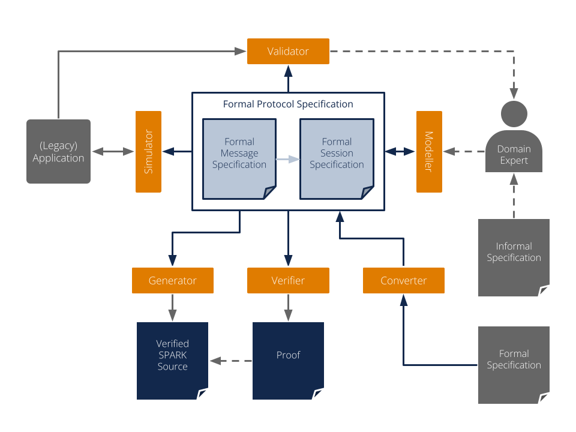
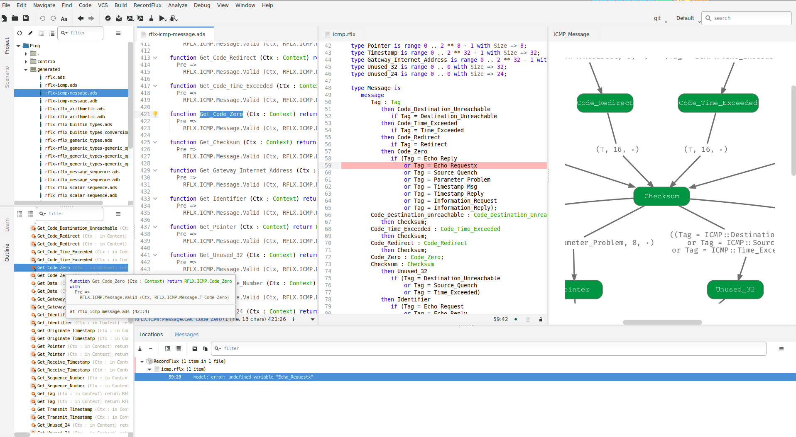
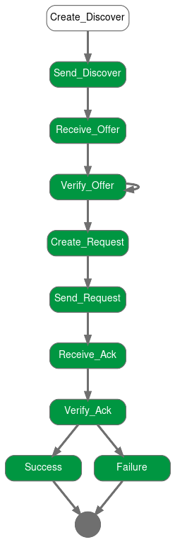
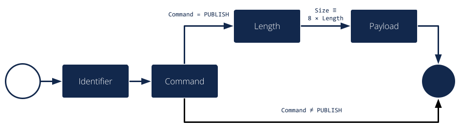

Overview
This section provides an overview of the protocol verification process, the parts of RecordFlux involved in working with binary communication protocols as well as some initial examples. For a complete description of the RecordFlux language refer to the RecordFlux Language Reference.
The Protocol Verification Process
Communication protocols don’t usually have a formal specification today, but are typically specified in imprecise English language texts. There are efforts to establish a formal process to specify, e.g., internet protocols, but until such a process has been defined and widely adopted, additional work is needed to create formal specifications from informal ones. This section outlines a typical process starting from an informal specification leading to a formally verified protocol implementation.
The process starts with the optional Conversion step, where the protocol in question or part of it is translated from a machine-readable input specification into a formal RecordFlux specification. As mentioned above, only few protocols offer such a specification today. However, the Internet Assigned Numbers Authority (IANA) maintains a repository of machine-readable Number Resources for a variety of protocols. Those definitions can be automatically converted into RecordFlux specifications to improve one of the most tedious tasks of protocol formalization, namely the correct translation of long lists of name / constant pairs.
A main activity when creating a formally verified protocol implementation is clearly the actual Specification of the machine readable formal definition of the protocol. Working from a paper specification, the RecordFlux user can use the tool's language to express basic data types, the format of messages and the behavior of communicating entities. To improve maintainability and to structure the specification in a coherent way, multiple specification documents can reference each other to form the overall specification. The language is designed to be modular: protocols do not need to “know” each other, and two protocols can be associated with each other independent of their respective specifications. In accordance with many protocol layering approaches, this allows for the creation of protocol libraries with reusable building blocks.
During specification development one question is of central importance: Does the formal specification correspond to the protocol? The process of ensuring that the correct thing has been specified is called Validation. As even the source specification may be vague, incorrect, contradictory or simply different from how the protocol is being implemented in practice, checking the formal specification against the output of existing implementations or protocol samples is of great value. The RecordFlux toolset provides ways to do exactly this: check whether a valid protocol sample is accepted by the specification, or whether an invalid sample is correctly rejected. The validation will typically be done while developing the formal specification, such that its validity is established incrementally.
Similar in its goals, but different in terms of process and implementation is the optional Simulation step. While for validation the focus is mostly on the correctness of message formats, simulation allows for direct interaction with existing implementations. To validate the formal specification, it can be loaded in a Python program and used to receive, check and send messages adhering to the protocol. While the main objective is to detect unexpected behavior, it can also be used to build Python tools accompanying the formally verified protocol stack with little effort. Of course the generated code could be used to interact with existing software, too. However, rapid prototyping and the vast source of third-party libraries make a Python environment a much more efficient choice.
The Model Verification step answers another question: Does the formally specified protocol have the desired properties? It’s worth noting that this is different from the goals of validation. Validation is to ensure that we do the right thing, verification is to ensure that we do the thing right. The model verification built into RecordFlux will typically be done iteratively during specification development. It ensures a number of static properties, such as determinism of the message parser or that generated code can always be proven to contain no runtime errors. There are also user-defined properties that are verified at the model level, e.g. that user-defined transitions are not statically false.
When the RecordFlux model has successfully been verified, the Code Generation phase transforms it into SPARK source code. It can be combined with hand-written SPARK, Ada, or C code and compiled into binaries using the GNAT compiler. The code generation process can be tailored towards resource-constrained, embedded systems with precise control over memory allocation and buffer sizes. As only few basic runtime functions are required, the generated code is suitable for environments with minimal runtimes.
An explicit design goal of RecordFlux is that all code generated from a successfully verified model can automatically be proven correct, without a need for user modifications or interactive proofs. This is done in the Program Verification step where the generated code, together with the hand written code it may be integrated in, is verified using the SPARK toolset.
The RecordFlux Toolset
As outlined above, a domain expert creates the formal representation of a protocol in the RecordFlux language. Having a text representation, RecordFlux specifications can be produced with any IDE or text editor, managed in version control systems, or compared using text comparison tools. However, the RecordFlux Modeller provides additional capabilities tailored to protocol specification development. A graphical representation of messages and state machines helps users to understand the structure of more complex specifications. The specification can be edited side-by-side with generated code, handwritten code, and other relevant artifacts. All specifications, or only a single specification file, can be checked, and SPARK code can be generated directly from within the Modeller.
All functionality in the Modeller is also available on the command line through the rflx command. This is RecordFlux’s main CLI, which has a number of subcommands of the form rflx <subcommand>. Some functionality is available only on the command line. See the output of rflx --help for a list of all subcommands and global options and use rflx <subcommand> --help to show options specific to a particular subcommand.
The Converter, available through the rflx convert subcommand of the RecordFlux CLI, provides the possibility to convert IANA Number Resources into RecordFlux specifications. Given a Number Resources file in XML format and an output directory, the converter produces a RecordFlux specification containing representations of the respective number definitions.
To check whether a given specification is correct, the Verifier performs a number of formal verification steps. The tool is available from within the Modeller (RecordFlux > Check or RecordFlux > Check All) but can also be run from the command line using the rflx check interface. The CLI exits with a non-zero status code in case of errors and thus can be easily integrated into a CI/CD pipeline. With the command line interface, arbitrarily many (unrelated) specifications can be checked at once.
Similar to the Verifier, the Generator is available from within the Modeller as well as on the command line through the rflx generate interface. As only successfully verified specifications are guaranteed to lead to provable SPARK code, the Generator automatically performs the verification, unless this is suppressed using the --no-verification switch (e.g. for known-good specifications that have been checked in a CI/CD pipeline). SPARK source files are generated into the directory specified by the -d switch on the command line. The result can be included in the list of source directories and analyzed by gnatprove as usual (see the SPARK User’s Guide for details).
The Optimizer reduces the size of the generated state machine code. In order to use the Optimizer, a project file for the SPARK code must be provided by the user and passed as an argument to rflx optimize.
The Validator is available through the rflx validate subcommand on the command line. It can be used to check whether a message specification correctly formalizes real-world data, or vice versa, whether a given data sample corresponds to the specification. Two types of samples can be used: valid samples which must be accepted by a specification (passed with the -v option) and invalid samples which must be rejected (passed with the -i option). All samples must be raw binary files without any metadata. There are two ways how samples can be provided to the tool and the same rules apply for both -v and -i. If there are several samples of the same kind in one directory and the samples have a .raw file extension, then it is sufficient to just provide this directory. Otherwise, the paths of the individual sample files must be provided one by one. In the latter case the sample file can have any extension or even have no extension. However, if it has an extension, then it must be included in the path as well. There can be as many -v and -i options given to the tool as needed. However, each of those options must have exactly one argument. Raw packets can, e.g., be exported from packet analyzers like Wireshark or extracted from a PCAP file using this script. To facilitate execution within a CI/CD pipeline, the --abort-on-error switch causes the tool to exit with an error code if any samples are rejected. Upon completion, the Validator will produce a report, with an option to display how much of a message has been covered:
$ rflx validate \
--coverage \
-i tests/examples/data/http_2/frame/invalid \
-v tests/examples/data/http_2/frame/valid \
examples/specs/http_2.rflx HTTP_2::Frame
Parsing examples/specs/http_2.rflx
Processing HTTP_2
[...]
Verifying HTTP_2::Frame
tests/examples/data/http_2/frame/valid/GOAWAY_58.raw PASSED
tests/examples/data/http_2/frame/valid/GOAWAY_66.raw PASSED
tests/examples/data/http_2/frame/valid/HEADERS_26.raw PASSED
[...]
tests/examples/data/http_2/frame/valid/PING_44.raw PASSED
tests/examples/data/http_2/frame/valid/PING_45.raw PASSED
tests/examples/data/http_2/frame/valid/PING_48.raw PASSED
tests/examples/data/http_2/frame/valid/PING_49.raw PASSED
tests/examples/data/http_2/frame/valid/PUSH_PROMISE_63.raw PASSED
tests/examples/data/http_2/frame/valid/RST_STREAM_64.raw PASSED
tests/examples/data/http_2/frame/valid/SETTINGS_0.raw PASSED
[...]
tests/examples/data/http_2/frame/valid/WINDOW_UPDATE_10.raw PASSED
[...]
--------------------------------------------------------------------------------
RecordFlux Validation Coverage Report
Directory: .
--------------------------------------------------------------------------------
File Links Used Coverage
http_2.rflx 56 37 66.07%
--------------------------------------------------------------------------------
TOTAL 56 37 66.07%
--------------------------------------------------------------------------------
================================================================================
Uncovered Links
================================================================================
http_2.rflx
--------------------------------------------------------------------------------
http_2.rflx:141:13: missing link Stream_Identifier -> Pad_Length
http_2.rflx:143:13: missing link Stream_Identifier -> Application_Data
http_2.rflx:146:13: missing link Stream_Identifier -> Exclusive_Flag
http_2.rflx:151:13: missing link Stream_Identifier -> Exclusive_Flag
http_2.rflx:170:13: missing link Pad_Length -> Application_Data
[...]
http_2.rflx:69:13: missing link Settings_Value_Enable_Push -> Final
If more complex validation beyond checking messages is required, the Simulator can be used. It allows loading RecordFlux message specifications into a Python program and using the resulting model to parse and generate messages at runtime. While the code does not benefit from the formal guarantees of generated SPARK code, errors can be caught at runtime. This makes the Simulator a useful tool during specification development to validate a specification against an existing real-world implementation. An example of using the Simulator can be found in examples/apps/ping/ping.py in the RecordFlux source repository.
{kind=link}
The Visualizer can be used to create graphical representations of a formal RecordFlux specification. It is available on the command line through the rflx graph command. It creates images for all messages and state machines found in the specifications passed on the command line and stores them in the output directory specified by the -d switch. By default, SVG images are created, but the -f switch may be used to select alternative formats like JPG, PNG or PDF. The -i switch may be used to filter out state machine states which must not be included in the output, which can be helpful, for example, to eliminate error states which may complicate the non-error case unnecessarily.
$ rflx graph -d out dhcp_client/specs/dhcp_client.rflx
Parsing dhcp_client/specs/dhcp_client.rflx
Parsing dhcp_client/specs/ipv4.rflx
Parsing dhcp_client/specs/dhcp.rflx
Processing IPv4
Processing DHCP
Processing DHCP_Client
Creating out/IPv4_Option.svg
Creating out/IPv4_Packet.svg
Creating out/DHCP_Static_Route.svg
Creating out/DHCP_Option.svg
Creating out/DHCP_Message.svg
Creating out/DHCP_Client_Session.svg
First Steps
The example used here is a minimal binary publish-subscribe ("Pub-Sub") protocol (i.e., a message broker). In the following sections we will first formally describe the message format using RecordFlux, generate SPARK code, and build a simple server which we then prove to contain no runtime errors. In a subsequent section, we will also define the protocol behavior using the RecordFlux language which will give us an abstract formal definition of the protocol and further reduce the amount of hand-written code.
In our example protocol, there is only one single implicit channel that clients can subscribe to. Once subscribed, a client may publish messages which the broker distributes to all other currently subscribed clients. A client does not receive messages published by itself. When finished, clients can unsubscribe from the broker and will no longer be able to publish or receive messages.
A number of status messages are used to communicate the result of an operation from the broker to the clients. The SUCCESS message indicates that a SUBSCRIBE, PUBLISH or UNSUBSCRIBE operation completed successfully. An ERROR_NOT_SUBSCRIBED message is emitted when a client tries to publish or unsubscribe while not currently subscribed, implying that a client has to be subscribed to publish. An ERROR_NO_SUBSCRIBERS is sent by the broker if no other clients are subscribed when publishing information, which is considered an error in this example. An ERROR_MESSAGE_TOO_LONG message is emitted when the published message exceeds an implementation-defined length, which may be shorter than the maximum possible message length. An ERROR message is sent back in all other cases.
Example: A Formally-Verified Message Parser
The messages of our example publish-subscribe protocol are a binary format which is encoded as follows:
Field |
Length [bits] |
Domain |
Description |
|---|---|---|---|
Identifier |
12 |
1 <= Identifier <= 4000 |
Unique client identifier |
Command |
4 |
SUBSCRIBE = 1, PUBLISH = 3, UNSUBSCRIBE = 4, ERROR = 11, ERROR_NOT_SUBSCRIBED = 12, ERROR_NO_SUBSCRIBERS = 13, ERROR_MESSAGE_TOO_LONG = 14, SUCCESS = 15 |
Message type |
Length |
8 |
0 <= Length < 2^8 |
Length of published payload in bytes, present only when Command = PUBLISH |
Payload |
8 * Length |
Arbitrary bytes |
Payload of published data, present only when Command = PUBLISH and Length > 0 |
As we can see, the message has several interesting properties which our formal specification needs to cover: Some of the fields are not multiple of 8 bits (Identifier, Command) or not byte aligned (Command). While representable in the available bit width, not all values are valid for all fields. For Identifier, the values 0 and 4001 .. 4095 are invalid and must be rejected. Likewise, the Command field has invalid values (e.g., 2) which do not represent a valid message type. There are also optional fields like Length and Payload, which are present only for messages where the Command field has the value 3 (i.e. PUBLISH). Lastly, the Payload field has a variable length determined by Length field.
Files, Packages and Names
Let’s formalize our Pub-Sub message format in the RecordFlux language. RecordFlux types (scalar types as well as messages) are defined in modules known as packages, whose syntax is inspired by SPARK. There is exactly one package per file; the file name has to be the same as the package name, folded to lowercase, and the file extension is “rflx”. We will use the name “Pub Sub” for our example protocol and create a file named pub_sub.rflx for the specification:
package Pub_Sub is
-- Type specifications (basic types, messages) go here
end Pub_Sub;
Single line comments, as in SPARK or SQL, start with a double hyphen (--) and comprise all text until the end of the line. There are no block comments in the RecordFlux language.
Names follow mostly the same rules as for the SPARK language: Letters A-Z, a-z, digits and underscores can be used. A name must not begin with an underscore or a digit, and must not end with an underscore; consecutive underscores are also prohibited. Names in RecordFlux are case-insensitive, i.e. Pub_Sub and pub_sub refer to the same thing. Future versions of RecordFlux will also be case-preserving, hence it is already considered good practice to use identical casing for all appearances of a name.
Scalar Types
To limit the size and allowed values of a numeric field in a message, we need to define a type that has the desired properties. For the Identifier field we define a type that can represent values from 1 to 4000, inclusive, and whose instances occupy 12 bits:
type Identifier is range 1 .. 16#F_A0# with Size => 12;
Numbers, like in SPARK, are base 10 by default, but can be represented in arbitrary bases by using the <base>#<value># notation. In the above example we represent the upper limit of 4000 by its hexadecimal representation 16#F_A0#. Note, that single underscores (_) can be introduced into numeric literals in arbitrary positions to improve readability.
As for the package name, “Identifier” adheres to the naming rules stated above. The range declares the lower, and upper bounds of a field of this type and the Size attribute defines the precise storage space of the type in bits. For consistency, sizes in RecordFlux specifications are always defined in bits – without exception. In the message definition below we will see how to deal with protocols that define lengths in terms of bytes.
Of course the upper bound must be consistent with the available space defined in the Size attribute. If we were to define the above type with an upper bound of 5000 (which obviously does not fit into 12 bits), the RecordFlux toolset would flag our specification as illegal:
Processing Pub_Sub
pub_sub.rflx:3:9: model: error: size of "Identifier" too small
We could proceed and define the Type field of our protocol as a 4 bit numeric value, similar to the Identifier field. While we could even express the fact that the type field must not be zero by choosing 1 as the lower limit, there would still be values that will be accepted (e.g. 2) but which are invalid according to the protocol specification. An enumeration type is much better suited to represent discrete choices as in the Command field:
type Command is
(
SUBSCRIBE => 1,
PUBLISH => 3,
UNSUBSCRIBE => 4,
ERROR => 11,
ERROR_NOT_SUBSCRIBED => 12,
ERROR_NO_SUBSCRIBERS => 13,
ERROR_MESSAGE_TOO_LONG => 14,
SUCCESS => 15
) with Size => 4;
As before, the type keyword introduces a type named Command with a storage size of 4 bits. The possible choices for the enumeration type are listed in parenthesis as pairs of name and value, separated by an arrow (=>). Fields with an enumeration type are only considered valid if their value matches one of the enumeration choices and are rejected otherwise. Refer to the section on Always_Valid enumeration types in the Language Reference on how to handle fields where all values are valid, but only some have names.
As with integer ranges, the RecordFlux toolset will protect the user from including values in the specification that cannot be represented in the available space. If we changed the value of SUCCESS to 8#42# (octal 42 / decimal 34), which does not fit into 4 bits, we get an error:
Processing Pub_Sub
pub_sub.rflx:5:9: model: error: size of "Command" too small
Message Types
With the package and the interesting scalar types in place, we can formalize the actual message structure. As can be seen in the format description, our pub-sub protocol message has the interesting property that some fields are only present under certain conditions. Formalizing such a message is easy in the RecordFlux language and hints at an important property of its messages: While simple messages may appear similar to SPARK records, or structs of linear fields in other languages, they are in fact arbitrarily complex directed acyclic graphs of fields. The edges of those messages carry information about conditions, the starting position and bit size of subsequent fields, which may in fact depend on previous fields in the graph:
Just like scalars, messages are also types. The specification for our pub-sub message is as follows:
type Length is unsigned 8;
type Message is
message
Identifier : Identifier;
Command : Command
then Length
if Command = PUBLISH
then null
if Command /= PUBLISH;
Length : Length;
Payload : Opaque
with Size => 8 * Length;
end message;
This contains quite a few new constructs – let’s unpack them one by one. The Length type is an integer type as we have used it for the Identifier previously. It’s worth noting that the ranges of integers may contain arbitrary expression, such as exponentiation (**) or subtraction (-) in the example above.
A message is encompassed by a message ... end message block which contains a list of fields, edges, and conditions making up the message graph. Readers familiar with other languages may notice that we call our message “Message” which appears to conflict with the message keyword. The same is true for the message field “Identifier” which has the same name as the previously defined type. Contrary to other languages (and SPARK in particular), RecordFlux’ language allows the use of keywords as type names, and keywords and type names as identifiers to give the user the greatest possible flexibility when formalizing an existing protocol.
Similar to records in SPARK, message fields are delimited by a colon (:) and terminated by a semicolon (;). Thus Field_Name : Field_Type; declares a field with the name “Field_Name” of type “Field_Type”. It gets interesting for optional fields: the then keyword creates an edge to another field explicitly, usually in conjunction with a condition marked by the if keyword. In our example, the Length field follows the Command field if (and only if) the Command field contains the value PUBLISH. As in SPARK, and unlike other languages, RecordFlux uses a single equal sign for comparison. For enumeration types like Command, the enumeration element name has to be used rather than its numeric field value.
When no then keyword is present for a field, there is an implicit then keyword with the next field as a target, e.g. an implicit “then Payload” for the Length field in the above example. Multiple then-clauses are allowed for a single field to define multiple edges to other fields under different conditions. There may even be multiple edges (i.e. then keywords) leading to the same field; e.g., to model separate conditions that may cause a field to be present. To indicate that a message ends when a specific condition is true, the null keyword can be used in a then clause. In the above example, the message is considered complete when Command does not have the value PUBLISH (then null if Command /= PUBLISH). If none of the then-clauses match for a given input, the message is considered invalid and rejected.
Among other things, the RecordFlux Verifier ensures that then-clauses are mutually exclusive, i.e. the resulting parser is deterministic. If we changed the above example to contain two then-clauses for Command which are not mutually exclusive, our specification would get rejected:
Command : Command
then Length
if Command = PUBLISH
then Length
if Command = PUBLISH or Command = UNSUBSCRIBE;
Processing Pub_Sub
pub_sub.rflx:21:10: model: error: conflicting conditions for field "Command"
pub_sub.rflx:23:19: model: info: condition 0 (Command -> Length): Command = Pub_Sub::PUBLISH
pub_sub.rflx:25:19: model: info: condition 1 (Command -> Length): Command = Pub_Sub::PUBLISH or Command = Pub_Sub::UNSUBSCRIBE
Another noteworthy aspect of our example is the Payload field. It is of type Opaque, one of RecordFlux’s few built-in types defining a sequence of arbitrarily many bytes. While the content of opaque fields is not defined, their length can be specified using a Size attribute. In our case, it defines the total length of the Payload field to be eight times the value of the Length field, since the Length field specifies the number of bytes and all RecordFlux field sizes are in bits.
Verifying the Specification and Generating Code
With the formal specification in place, we can use the RecordFlux verifier to prove the formal model of our specification. On the command line, use the rflx check subcommand with the specification file as its only parameter:
$ rflx check specs/pub_sub.rflx
Parsing specs/pub_sub.rflx
Processing Pub_Sub
The RecordFlux Modeller can also be used to create and check specifications. A simple project file named pub_sub.gpr located in the root directory of our example project configures directories for hand-written code (src), generated code (generated) and specifications (specs). It also enables support for the RecordFlux specification language and sets the output directory for generated code:
project Pub_Sub is
for Languages use ("Ada", "RecordFlux");
for Source_Dirs use ("src", "generated", "specs");
package Recordflux is
for Output_Dir use "generated";
end Recordflux;
end Pub_Sub;
In GNAT Studio, the RecordFlux > Check menu entry can then be used to verify a specification, the Check All entry verifies all RecordFlux specifications in a project at once. To generate SPARK from the formal specification, either use RecordFlux > Generate from within GNAT Studio, or rflx generate on the command line (the output directory must be specified using the -d switch, as the rflx command line tool does not yet read this information from the project file):
$ rflx generate -d generated specs/pub_sub.rflx
Parsing specs/pub_sub.rflx
Processing Pub_Sub
Generating Pub_Sub::Identifier
Generating Pub_Sub::Command
Generating Pub_Sub::Length
Generating Pub_Sub::Message
Creating generated/rflx-pub_sub.ads
Creating generated/rflx-pub_sub-message.ads
Creating generated/rflx-pub_sub-message.adb
Creating generated/rflx-rflx_arithmetic.ads
Creating generated/rflx-rflx_builtin_types-conversions.ads
Creating generated/rflx-rflx_builtin_types.ads
Creating generated/rflx-rflx_generic_types.ads
Creating generated/rflx-rflx_generic_types-generic_operators.ads
Creating generated/rflx-rflx_generic_types-generic_operations.ads
Creating generated/rflx-rflx_message_sequence.ads
Creating generated/rflx-rflx_scalar_sequence.ads
Creating generated/rflx-rflx_types.ads
Creating generated/rflx-rflx_types-operators.ads
Creating generated/rflx-rflx_types-operations.ads
Creating generated/rflx-rflx_arithmetic.adb
Creating generated/rflx-rflx_generic_types-generic_operations.adb
Creating generated/rflx-rflx_message_sequence.adb
Creating generated/rflx-rflx_scalar_sequence.adb
Creating generated/rflx.ads
The generated code can be integrated into an existing SPARK package hierarchy by passing the --prefix=Root.Package parameter to the generate command. Note, that the root packages are assumed to exist and the code generator will not generate them:
$ rflx generate --prefix=My_Package -d generated specs/pub_sub.rflx
Parsing specs/pub_sub.rflx
Processing Pub_Sub
Generating Pub_Sub::Identifier
Generating Pub_Sub::Command
Generating Pub_Sub::Length
Generating Pub_Sub::Message
Creating generated/my_package-pub_sub.ads
Creating generated/my_package-pub_sub-message.ads
[...]
Using the Generated Code
To allow us to focus on the protocol part of our implementation, we will assume two SPARK packages: a packet Socket for communication with clients and a packet DB for handling client subscriptions. The communication packet has the following specification:
with RFLX.RFLX_Types;
package Socket
with SPARK_Mode, Abstract_State => Network
is
Initialized : Boolean := False with Ghost;
procedure Initialize (Port : Natural)
with Global => (In_Out => Initialized, Output => Network),
Pre => not Initialized,
Post => Initialized;
procedure Send (Data : RFLX.RFLX_Types.Bytes)
with Global => (Input => Initialized, In_Out => Network),
Pre => Initialized;
procedure Receive (Data : out RFLX.RFLX_Types.Bytes;
Success : out Boolean)
with Global => (Input => Initialized, In_Out => Network),
Pre => Initialized;
end Socket;
The library implements a shared communication channel based on the UDP protocol. Here it is simply for demonstration purposes: a realistic implementation would allow multiple connections and more detailed error handling. The Initialize procedure must be called once with the UDP port number to use before sending or receiving any data. This is enforced by the SPARK contracts. The Send procedure sends out the complete buffer passed in through the Data parameter. The Receive procedure fills its Data parameter with the received packet and signals success through the Success parameter.
The communication package already uses code generated from the protocol specification. The RFLX.RFLX_Types package is the default instance of the generic types package RFLX.RFLX_Generic_Types which contains basic definitions for scalar types, indexes, offsets and arrays of bytes which are used throughout the generated code. Instantiations with custom types are possible, but in this example our communication library uses the default type for byte buffers RFLX.RFLX_Types.Bytes directly.
Our second helper package for handling subscribers to our pub-sub protocol also uses generated code. For every RecordFlux package, a corresponding SPARK package is generated within the RFLX hierarchy. Consequently, the package RFLX.Pub_Sub contains code generated for the (scalar) type definition from the Pub_Sub package. To avoid unnecessary type conversions, we use the generated type RFLX.Pub_Sub.Identifier in the database package:
with RFLX.Pub_Sub;
package DB with
SPARK_Mode, Abstract_State => Subscribers
is
function Is_Subscribed (ID : RFLX.Pub_Sub.Identifier) return Boolean
with Global => (Input => Subscribers);
procedure Unsubscribe (ID : RFLX.Pub_Sub.Identifier)
with Global => (In_Out => Subscribers),
Pre => Is_Subscribed (ID);
procedure Subscribe (ID : RFLX.Pub_Sub.Identifier)
with Global => (In_Out => Subscribers),
Post => Is_Subscribed (ID);
type Identifiers is array (Natural range <>)
of RFLX.Pub_Sub.Identifier;
function Current_Subscribers return Identifiers
with Global => (Input => Subscribers);
end DB;
The subprograms allow for subscribing, unsubscribing and checking whether a specific identifier is currently subscribed. Contracts ensure that unsubscribing is possible only for subscribed entities. The Current_Subscribers function returns a list of currently subscribed identifiers.
With the helper packages described, we can implement the actual logic of the message broker in SPARK. The broker itself is very simple, consisting only of a single Run procedure which is expected to run in a loop in the main program:
with Socket;
package Broker
with SPARK_Mode
is
procedure Run with
Pre => Socket.Initialized;
end Broker;
Before we go into the details of the Run subprogram, we implement a helper procedure Send_Status to construct and send status and error messages. The procedure will be private within the body of the Broker package and create a simple message (i.e. one that does not have PUBLISH as a command). This helps simplifying our state machine logic and also demonstrates the principles of message generation:
package body Broker with SPARK_Mode
is
use type RFLX.RFLX_Types.Bytes_Ptr;
use type RFLX.RFLX_Types.Index;
subtype Status is RFLX.Pub_Sub.Command
range RFLX.Pub_Sub.ERROR .. RFLX.Pub_Sub.SUCCESS;
procedure Send_Status (Id : RFLX.Pub_Sub.Identifier; St : Status)
with Pre => Socket.Initialized;
procedure Send_Status (Id : RFLX.Pub_Sub.Identifier;
St : Status)
is
Context : RFLX.Pub_Sub.Message.Context;
Buffer : RFLX.RFLX_Types.Bytes_Ptr :=
new Types.Bytes'(1 .. 4_096 => 0);
begin
RFLX.Pub_Sub.Message.Initialize (Context, Buffer);
RFLX.Pub_Sub.Message.Set_Identifier (Context, Id);
RFLX.Pub_Sub.Message.Set_Command (Context, St);
RFLX.Pub_Sub.Message.Take_Buffer (Context, Buffer);
Socket.Send (Buffer.all);
RFLX.RFLX_Types.Free (Buffer);
end Send_Status;
-- ...
end Broker;
The Send_Status procedure receives the identifier of the client to address the message to. Status is a subtype of the generated RFLX.Pub_Sub.Command enumeration type which corresponds directly to the Command enumeration in our RecordFlux specification. We have chosen the enumeration type in a way that the subtype comprises only commands for simple status messages. SPARK will then verify that we do not accidentally pass, e.g., PUBLISH to Send_Status.
Working with messages always requires a context. Among other things, the context holds a pointer to the actual message, the current state of the message serialization or parsing, and the actual field values for scalar types. The raw message data is held in a buffer of the previously mentioned Bytes type. After initializing the context with a pointer to that buffer using the Initialize procedure, the generated Set_<FieldName> procedures can be used to set the value of scalar message fields. For example, to set the Identifier field of Message in the Pub_Sub specification, the procedure RFLX.Pub_Sub.Message.Set_Identifier (Context, Value) would be used.
The SPARK contracts on the generated subprograms ensure that required initialization is performed, and that fields are set in the correct order. If we forgot to call Initialize, gnatprove would emit an error:
broker.adb:28:27: medium: precondition might fail, cannot prove RFLX.Pub_Sub.Message.Has_Buffer (Ctx)
SPARK also proves that message fields are set in the right order. While it may not result in a problem for the scalar values in our message specification, field position may depend on previous fields and setting them out of order could result in incorrect messages. Hence, the order is always enforced. If we set Command before Identifier, we’d get another error:
broker.adb:28:27: medium: precondition might fail, cannot prove RFLX.Pub_Sub.Message.Valid_Next (Ctx, RFLX.Pub_Sub.Message.f_command)
To actually use the generated message, we first need to retrieve the pointer to the message buffer from the context. When calling Initialize, the pointer is stored inside the context and SPARKs borrow checker ensures that it cannot be accessed outside the context anymore. To retrieve it, the Take_Buffer procedure can be used. After that, the message buffer may be passed to our Socket.Send procedure. Note, that after taking the buffer, the context will essentially be only usable to retrieve scalar values. The SPARK contracts ensure that no fields are set, and no value of a non-scalar field is retrieved, before the context is reinitialized.
Finally, the memory allocated in the Send_Status procedure needs to be freed. RecordFlux generates a Free procedure for the built-in type Bytes_Ptr. Again, SPARK ensures that no memory leak can occur. If we forgot to call Free, an error would be generated:
broker.adb:24:07: medium: resource or memory leak might occur at end of scope
With a way to send status messages easily, we can look into the implementation of our main subprogram Run:
procedure Run is
Context : RFLX.Pub_Sub.Message.Context;
Buffer : RFLX.RFLX_Types.Bytes_Ptr :=
new RFLX.RFLX_Types.Bytes'(1 .. 4_096 => 0);
Success : Boolean;
use type RFLX.Pub_Sub.Length;
begin
Socket.Receive (Buffer.all, Success);
if not Success then
RFLX.RFLX_Types.Free (Buffer);
return;
end if;
RFLX.Pub_Sub.Message.Initialize
(Context,
Buffer,
RFLX.RFLX_Types.To_Last_Bit_Index (Buffer'Last));
-- ...
end Run;
Like before, we have a context variable and a pointer to the buffer which is used to receive a message from the network. We also initialize the context using the Initialize procedure. The difference here, is the third parameter (Written_Last), which we pass to Initialize. It determines the last bit of the message. When we generated a message, the default value 0 was used to indicate that we started with an empty message which got populated by the Set_<FieldName> procedures. When parsing the received data, we have to use the end of the message instead. The To_Last_Bit_Index function can be used to convert the byte size of the buffer into a bit index as required by Initialize.
Once we have initialized the context with the received data, we can call Verify_Message to perform the verification of the received message. The Well_Formed_Message function is then used to retrieve the result of this operation:
procedure Run is
-- ...
begin
-- ...
RFLX.Pub_Sub.Message.Verify_Message (Context);
if RFLX.Pub_Sub.Message.Well_Formed_Message (Context) then
declare
Id : RFLX.Pub_Sub.Identifier :=
RFLX.Pub_Sub.Message.Get_Identifier (Context);
Cmd : RFLX.Pub_Sub.Command :=
RFLX.Pub_Sub.Message.Get_Command (Context);
begin
case Cmd is
when RFLX.Pub_Sub.SUBSCRIBE =>
DB.Subscribe (Id);
Send_Status (Id, RFLX.Pub_Sub.SUCCESS);
when RFLX.Pub_Sub.UNSUBSCRIBE =>
if DB.Is_Subscribed (Id) then
DB.Unsubscribe (Id);
Send_Status
(Id,
RFLX.Pub_Sub.SUCCESS);
else
Send_Status
(Id,
RFLX.Pub_Sub.ERROR_NOT_SUBSCRIBED);
end if;
when RFLX.Pub_Sub.PUBLISH =>
if DB.Is_Subscribed (Id) then
declare
Length : RFLX.Pub_Sub.Length
:= RFLX.Pub_Sub.Message.Get_Length (Context);
Subscribers : DB.Identifiers
:= DB.Current_Subscribers;
begin
if Subscribers'Length <= 1 then
Send_Status
(Id,
RFLX.Pub_Sub.ERROR_NO_SUBSCRIBERS);
elsif Length > 4_000 then
Send_Status
(Id,
RFLX.Pub_Sub.ERROR_MESSAGE_TOO_LONG);
else
RFLX.Pub_Sub.Message.Take_Buffer (Context, Buffer);
for Subscriber in Subscribers'Range loop
Socket.Send (Buffer.all);
end loop;
end if;
end;
else
Send_Status
(Id,
RFLX.Pub_Sub.ERROR_NOT_SUBSCRIBED);
end if;
when others =>
Send_Status
(Id,
RFLX.Pub_Sub.ERROR);
end case;
end;
end if;
-- ...
end Run;
If the message is well-formed, fields can be accessed using the generated Get_<FieldName> functions. Even for a well-formed message the SPARK contracts make sure that no missing fields are accessed. If our code tried to access the Length field in a received message where the Command field is not set to PUBLISH, this would be detected statically:
broker.adb:81:51: medium: precondition might fail
As before, we need to take the buffer out of the context and free it to avoid resource leaks. As we may have forwarded a publish message, we need to check whether the buffer is still in the context. This can be done by Has_Buffer function:
procedure Run is
-- ...
begin
-- ...
if RFLX.Pub_Sub.Message.Has_Buffer (Context) then
RFLX.Pub_Sub.Message.Take_Buffer (Context, Buffer);
end if;
RFLX.RFLX_Types.Free (Buffer);
end Run;
A very simple main procedure which initializes the networking library and calls Run in a loop concludes our example:
with Socket;
with Broker;
procedure Main is
begin
Socket.Initialize (Port => 8_888);
loop
Broker.Run;
end loop;
end Main;
Proving and Running the Result
To prove our program using gnatprove, we need to extend our project file to configure the proof process:
project Pub_Sub is
– ...
package Prove is
for Proof_Switches ("Ada") use (
"-j0",
"--prover=z3,cvc5,altergo,colibri",
"--steps=0",
"--timeout=180",
"--memlimit=2000",
"--checks-as-errors=on",
"--warnings=error",
"--counterexamples=off"
);
end Prove;
for Main use ("main.adb");
end Pub_Sub;
Depending on the complexity of the message specifications, code generated by RecordFlux will require significant time and resources to prove successfully. The -j0 option instructs gnatprove to use all available CPU cores for parallel proof. The more cores are available, the better. The number of cores used can be limited by choosing a number greater than 0. A non-standard order of provers is selected using the --provers switch. Different provers or a different order may work as well, but the above example shows the combination we have found to be most effective. We also found it helpful to disable the step limit (--steps=0) as the default limit is too low and the steps required by different solvers vary greatly. Disabling counter examples reduces the proof overhead and is advisable for the generated code. If proofs fail for generated code, adapting --timeout or --memlimit may be necessary. For details on the options, consult the SPARK User’s Guide.
With the proof options in place, we can run gnatprove on the code:
$ gnatprove -P pub_sub.gpr
Phase 1 of 2: generation of Global contracts ...
Phase 2 of 2: flow analysis and proof ...
Summary logged in obj/gnatprove/gnatprove.out
Finally, we can build and run the example:
$ gprbuild -P pub_sub.gpr
Compile
[Ada] main.adb
[Ada] broker.adb
[Ada] socket.adb
[Ada] db.adb
Bind
[gprbind] main.bexch
[Ada] main.ali
Link
[link] main.adb
$ ./obj/main